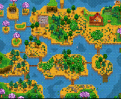
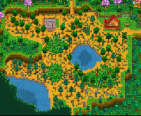

When creating a new farm, the player is given the choice between 5 farm types.
| Standard Farm | Forest Farm | Riverland Farm | Hill-Top Farm | Wilderness Farm |
 |
 |  |
Each type of farm comes with its advantages and disadvantages.
Standard: The standard farm has no extra perks, simply a lot of farm space for crops and animals.
Forest Farm: The forest farm covers the edge of your land. This type of farm is mostly made up of trees and foliage. The forested areas are a source of wood, large renewable stumps, seasonal forage items, and weeds. The forest farms are also full of bushes. The berry bushes can also be used as a source of food. Ponds and grass areas also appear in the forest.
Riverland Farm: The riverland farm is land covered partially by water. These Riverland farms can be an excellent source of fish. The player hunts for fish in the water to use as a source of food when crops are scarce.
Hill-Top Farm: The Hill-Top farm is one of the rarer farms in the Stardew Valley game. This type of farm is mostly found in a special mining area in the southeast region of the map. The Hill-Top farms are an excellent supply of stones, ore, and geodes. The type of ore and geodes that you mine are relative to your farming level. The better quality ores appear at a higher level, while the lower quality ores appear at a lower level. The Hill-Top farm is also a source of fish. The cliffs and the stream in the Hill-Top decreases its farming area.
Wilderness Farm: The wilderness farm is the most dangerous type of farm in the game. The monsters come from wilderness farms. Monster and Wilderness Golems can come for you in the night. The level of the Monster and Golems depends on the combat level of the game.
Each farm has its unique features. The Standard Farm is ideal for farming, the Riverland Farm is great for fishing, the Forest Farm is helpful for foraging, the Hill-top Farm has great opportunities for mining, and the Wilderness Farm is prone to combat.
What do you do on your farm?
Well, it's a farm, so you should be farming! Locals have shops where you can purchase crops and buildings!
Above are examples of what your farm could look like!
Stardew Valley has 4 seasons, each lasting 28 days. The seasons are Spring, Summer, Fall, Winter. On day 1 of each season, your crops from the past season die and are no longer harvestable. This means it is absolutely necessary to plan ahead to be the most efficient!
| Spring | Summer | Fall | Winter |
 |
 |
 |